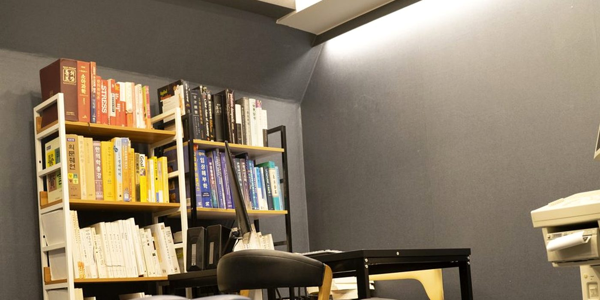

한의원 초음파 진단은 언제 하고, 무엇을 살펴보나요?
한 줄 답변
초음파 진단은 모든 환자에게 하는 검사가 아니라, 통증 부위의 힘줄·근육·관절 주변 상태를 눈으로 확인할 필요가 있다고 판단될 때 사용하며, 영상을 보며 환자분이 이해할 수 있게 설명합니다.
초음파 진단은 모든 환자에게 하는 검사가 아니라, 통증 부위의 힘줄·근육·관절 주변 상태를 눈으로 확인할 필요가 있다고 판단될 때 사용하며, 영상을 보며 환자분이 이해할 수 있게 설명합니다.
"여기가 아프다"는 말과 실제 몸 안의 상태는 다를 수 있습니다. 초음파는 방사선 없이 몸 안을 실시간 영상으로 살펴볼 수 있는 방법이라, 통증 부위 주변을 확인할 때 도움이 됩니다.
이럴 때 사용합니다
- 어깨, 무릎, 발목처럼 힘줄·인대·근육이 관련된 통증이 있을 때
- 부기나 뭉침이 있어 부위의 상태를 눈으로 확인할 필요가 있을 때
- 치료 방법을 정하기 전에 어느 부위를 중심으로 볼지 확인하고 싶을 때
- 치료 전후의 상태를 환자분과 함께 보며 설명할 필요가 있을 때
모든 분이 같은 검사를 받지는 않습니다. 말씀해 주신 증상과 진찰을 바탕으로 필요하다고 판단될 때만 합니다.
이렇게 진행합니다
1. 불편한 동작과 통증 부위를 먼저 듣습니다. 2. 필요하다고 판단되면 그 부위에 젤을 바르고 탐촉자를 대어 영상을 확인합니다. 3. 화면을 보며 어느 부위에서 무엇을 보고 있는지 쉬운 말로 설명합니다. 4. 영상 소견과 진찰, 일상 동작의 불편함을 함께 보고 치료 방향을 정합니다.
알아두실 점
- 초음파 영상만으로 통증의 모든 원인을 판단하지는 않습니다. 영상, 진찰, 환자분의 이야기를 함께 봅니다.
- 더 정밀한 검사나 다른 의료기관의 진료가 필요하다고 판단되면 안내해 드립니다.
- 영상에서 보이는 소견이 곧 통증의 원인이라고 단정하지 않습니다.
다음 진료로 이어집니다
처음 본 영상과 달라진 점을 확인하고 싶으면 다음 진료에서 이어서 살핍니다. 지난번 이야기와 함께 변화를 확인합니다.
자주 묻는 질문
초음파는 모든 환자가 받나요?
아니요. 통증 부위의 상태를 눈으로 확인할 필요가 있다고 판단될 때만 사용합니다.
몸에 해롭지 않나요?
초음파는 방사선을 사용하지 않는 검사입니다. 다만 모든 검사는 필요한 경우에 하는 것이 원칙입니다.
초음파에서 이상이 보이지 않으면 아프지 않은 건가요?
아니요. 영상에서 뚜렷하게 보이지 않아도 통증은 있을 수 있어, 진찰과 환자분의 이야기를 함께 봅니다.
비용은 어떻게 되나요?
적용 대상과 비용은 진찰 후 안내해 드립니다.
이 글은 일반적인 건강 정보이며 개인의 진단이나 치료를 대신하지 않습니다. 증상이 있거나 복용 중인 약이 있다면 진료를 통해 확인하세요. 치료 효과는 개인마다 다를 수 있습니다.
지난 이야기부터 이어서 묻습니다
좋은꿈참사랑한의원 노량진점은 재진 때 지난번 이야기부터 이어서 여쭙니다. 진료시간과 예약은 오시는 길에서 확인하세요.
좋은꿈참사랑한의원 노량진점은 재진 때 지난번 이야기부터 이어서 여쭙니다. 진료시간과 예약은 오시는 길에서 확인하세요.